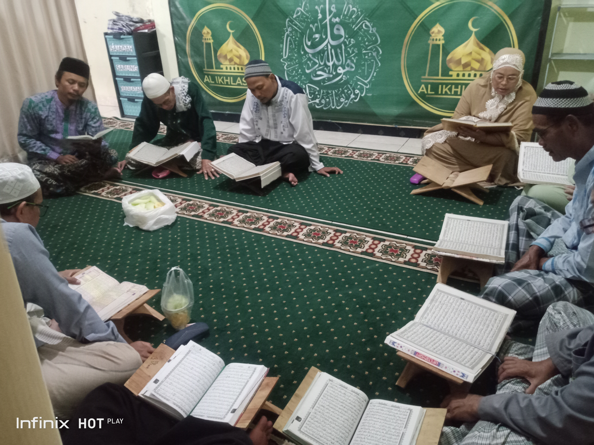
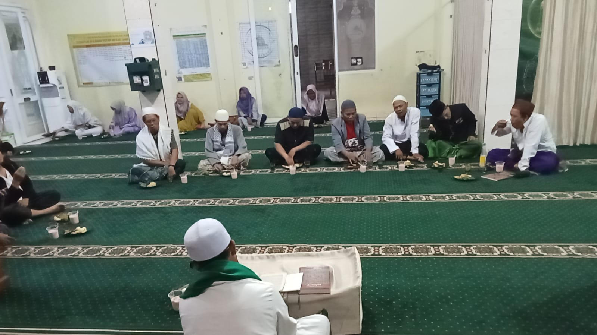

Usia lanjut bukanlah penghalang untuk terus belajar dan mendekatkan diri kepada Al-Qur'an. Berangkat dari semangat tersebut, Pendidikan Al-Qur'an Lanjut Usia (PAUL) hadir sebagai wadah pembimbingan membaca Al-Qur'an khusus bagi jamaah lansia di lingkungan Kampung Ciborerang, Desa Sangkanhurip.
Program mulia ini diinisiasi oleh Ust. Asep E Rohidin, S.H.I. selaku Ketua Bidang Imarah DKM Masjid Jami' Al-Ikhlash. Berkat keistiqomahan pengurus dan antusiasme para jamaah, kegiatan PAUL kini telah tumbuh dan berjalan dengan penuh ketenangan selama kurang lebih 10 tahun.
Metode Pembelajaran: One Day One Ayat
Salah satu kunci keberlanjutan program PAUL selama satu dekade adalah pendekatan pembelajaran yang ramah lansia. Mengingat daya ingat dan kondisi fisik peserta yang beragam, metode One Day One Ayat diterapkan agar bapak dan ibu peserta tidak merasa terbebani.
Pembimbingan difokuskan pada perbaikan makhorijul huruf, kelancaran tajwid dasar, serta hafalan ayat-ayat pendek secara perlahan namun konsisten. Setiap peserta dibimbing dengan tingkat kesabaran tinggi dalam suasana pembelajaran yang sejuk dan tanpa rasa canggung.
Suasana Kekeluargaan & Ramah Tamah
Lebih dari sekadar tempat belajar Al-Qur'an, PAUL telah berkembang menjadi ruang silaturahmi yang erat antarjamaah lansia. Setiap sesi pengajian ditutup dengan halqah ramah tamah dan kebersamaan yang memperkuat tali ukhuwah islamiyah di antara para sesepuh kampung.


Harapan & Keberlanjutan Dakwah
DKM Masjid Jami' Al-Ikhlash terus berkomitmen memfasilitasi kebutuhan sarana dan prasarana program PAUL. Diharapkan ke depan, makin banyak jamaah usia lanjut yang tergerak untuk bergabung, merasakan manisnya berinteraksi dengan Al-Qur'an di sisa usia yang berkah.